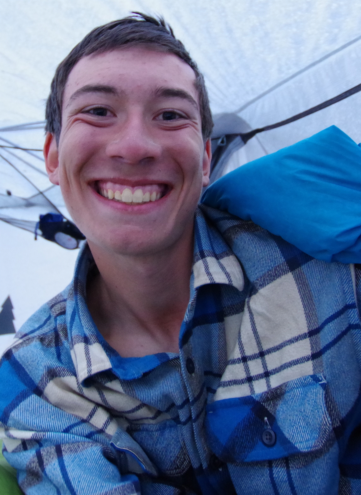
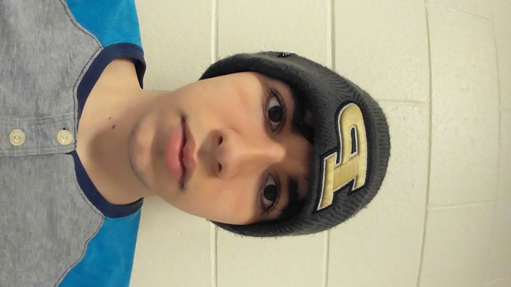

I am Clayton Stark, a freshman at Purdue, with a major in Video Game Development and Design.I am currently a member of the Purdue Voyager Club, the Purdue Anime Club, and the Dungeons at Purdue club. My teammates are Yiorgos Bereves, Cliffe Davis and Nathaniel Reeves.
Yiorgos Bereveskos is an Exploratory studies student at Purdue Univeristy. He is planning on changing majors to CGT, were he hope to persue a degree in game developtment and design. He is a part of the philosophy club and SIGGRAPH.
My name is Cliffe Davis. I’m a freshman here at Purdue, majoring in Animation. Some of my favorite things to do are Art and Skateboarding, and my dream job would be a primarily creative position at a major studio one day.